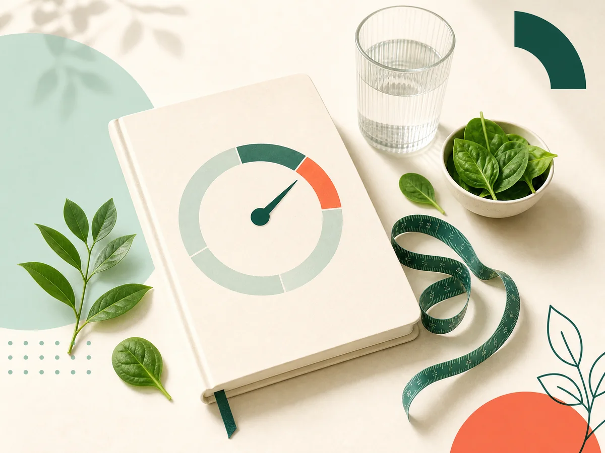
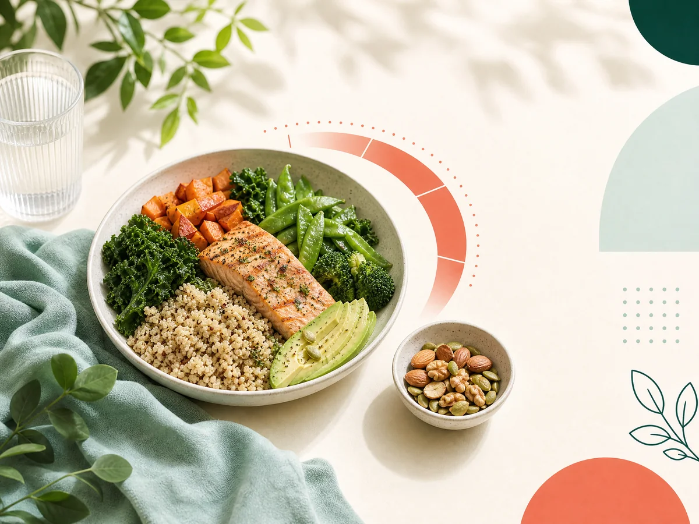
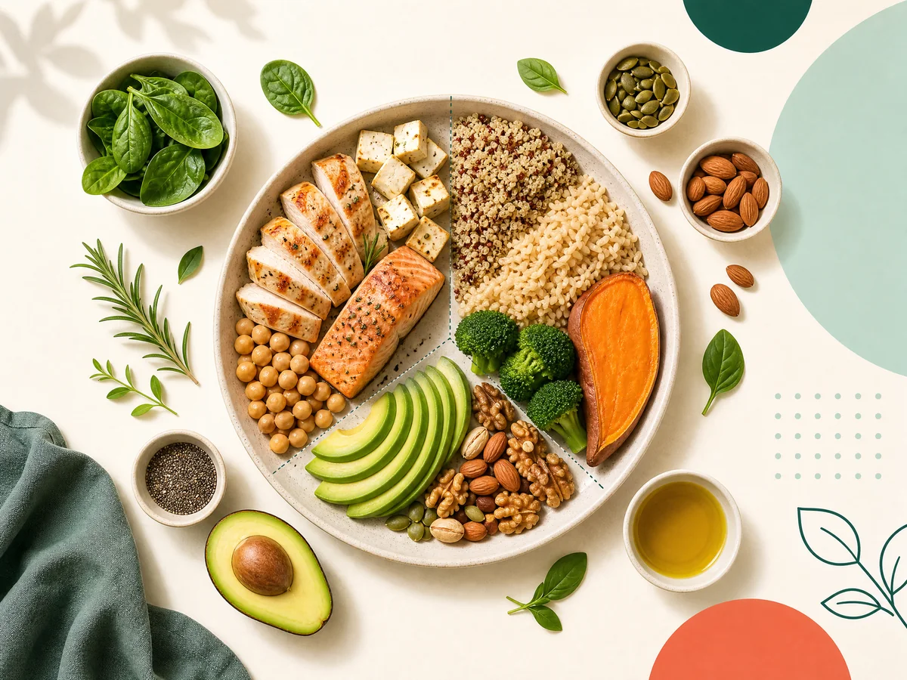

ما الفرق بين BMR وTDEE؟
فهم الأيض الأساسي وإجمالي الإنفاق اليومي قبل تفسير النتيجة.
قراءة المقال ←محتوى مختصر يشرح المفاهيم الأساسية ويساعدك على استخدام الحاسبات كأداة للفهم، لا كحكم نهائي.

أساسيات التغذية
عادات يوميةلماذا تكون الخطوات الصغيرة أكثر قابلية للاستمرار من الحلول القاسية.
قراءة المقال ←
توازن الطبقإرشادات عامة للشرب قبل وأثناء وبعد النشاط البدني.
قراءة المقال ←لماذا تعرض الحاسبة نطاقًا تقريبيًا لا يومًا مضمونًا.
قراءة المقال ←افهم دلالة النقاط ولماذا لا يغني الاختبار عن تحليل الدم.
قراءة المقال ←افهم الفرق بين BMI للبالغين ومؤشر BMI حسب العمر والجنس.
قراءة المقال ←شرح الزيادة التقريبية حسب الثلث وحدود استخدام الرقم.
قراءة المقال ←